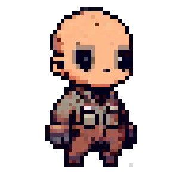
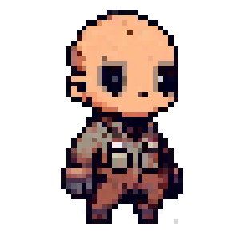
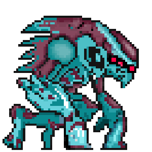
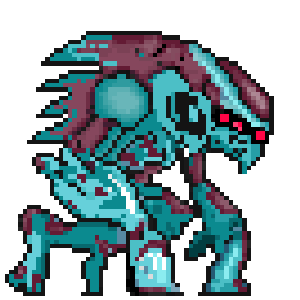

Xbox

Swicth

Steam

Itchi Io

Epic Games

Playstation

Emily Blake
Emily Blake é mais do que uma soldada — ela é a mente que conecta a humanidade ao abismo. Nascida em um planeta artificial e forjada no caos da 5ª Onda, Emily se tornou a melhor Especialista Cibernética da Base 42.
Megan Blake
Megan atua como a especialista de campo que acompanha Emily em vários momentos-chave da campanha. Graças à nanotecnologia que ela mesma desenvolveu, Megan é capaz de analisar o ambiente, detectar resíduos das nanopartículas inimigas e antecipar emboscadas.
Razen Evin
Veterano da 3ª e 4ª Onda, ele já viu colônias inteiras desaparecerem no silêncio do espaço — e carrega cada perda como uma cicatriz que o mantém em movimento. Atualmente, é o capitão das Unidades de Defesa Avançada da Base Selene,
Koutetsu Grow
Koutetsu Grow não é apenas o inimigo final de Sky Nexus — ele é a razão pela qual a guerra começou. Forjado em um laboratório vivo no núcleo do asteroide Vesta, Grow é o primeiro híbrido perfeito entre matéria biológica e tecnologia interdimensional. Seu corpo é uma fusão de metal orgânico, circuitos que respiram e músculos que se regeneram em segundos.
NanoRector 9 - Arma básica cada disparo por clique, infinita
Tri-Shot - Dispara 3 projéteis em forma de cone, cobrindo uma área maior e atingindo múltiplos inimigos próximos.
PlasmaBeam - Dispara um feixe de plasma contínuo que causa alto dano enquanto estiver ativo.
Raptor-3 - Dispara 3 mísseis simultaneamente em cadência rápida.
Raptor-Lock - Cada míssil corta o ar em velocidade extrema, rastreando movimentos inimigos com precisão. Uma arma feita para quem não quer apenas atacar… mas garantir que nada escape vivo.

FlameBurst - Libera um fluxo contínuo de chamas escaldantes, queimando tudo em seu caminho. Utiliza um modelo animado em vez de um sistema de partículas para proporcionar um efeito mais intenso e visceral.
Overload 4 - Dispara 4 projéteis por clique com distância de 11 Unity unit
Viper-M - Dispara mísseis que perseguem inimigos em cadência média.
Conceito
No ano 5605, a humanidade sobrevive em um planeta artificial chamado SELENE, após séculos de guerras interplanetárias e colapsos cósmicos. A energia vital que move o universo — as Nanopartículas — tornou-se o recurso mais disputado entre as civilizações.
Início - 5ª Onda
Décadas após o colapso das antigas colônias humanas, um evento conhecido como A 5ª Onda mudou o destino da galáxia. Duas Singularidades Gravitacionais colidiram, abrindo um vórtice dimensional de onde emergiram criaturas biomecânicas portadoras de uma tecnologia
Meio
Quando sinais de atividade dimensional são detectados no Asteroide Vesta, Emily é convocada pelo Comandante Raze Evin, veterano sobrevivente da 4ª Onda. A missão: impedir que Koutetsu Mobile, líder da frota alienígena,
Clímax — O Confronto com Koutetsu Grow
Após atravessar ruínas cósmicas e biolaboratórios alienígenas, Emily chega ao coração de Vesta, uma cidade suspensa dentro da rocha viva do asteroide. Lá, ela enfrenta o colosso Koutetsu Mobile, uma entidade que mistura carne, ferro e energia escura.
Final
Exausta, Emily retorna à nave. A explosão de Vesta libera uma onda colossal de Nanopartículas, que se espalha por todo o setor espacial. Raças a 45.000 km de distância absorvem a energia — e com ela, um fragmento do sistema de propulsão temporal ativado antes da destruição.
Satori (悟り)
Satori é o drone mais antigo do programa Companion e opera como uma extensão lógica da mente de Emily. Ele analisa campos energéticos, prevê rotas de inimigos e calcula probabilidades de sobrevivência em nanossegundos. Não fala muito — mas quando emite um alerta, é porque algo realmente perigoso está prestes a acontecer.
Inori (祈り)
Equilibrado, protetor e sensível ao estado biológico da equipe. Inori monitora sinais vitais, temperatura corporal e fluxo de nanopartículas em Emily após o incidente de Vesta. Além de emitir campos defensivos, reage emocionalmente às situações de risco: sua luz fica mais intensa quando Emily está ferida ou com pouca energia. É considerado o “coração” entre os Companions.
Kagero (陽炎)
Discreto, silencioso e letal. Kagero foi criado para infiltração e ataques rápidos em distâncias curtas. Seus emissores de camuflagem temporal permitem que ele distorça sua presença por frações de segundo — tempo suficiente para neutralizar inimigos que tentam flanquear Emily. É o mais agressivo do grupo, sempre à caça da próxima ameaça.
Hikari (光)
Leve, veloz e sempre brilhante. Hikari foi projetado para navegar por ambientes instáveis, iluminando rotas e revelando ameaças camufladas. Ele emite pulsos fotônicos que restauram parte dos sensores das armas de Emily, funcionando quase como um feixe de luz em zonas mortas. Seu comportamento lembra o de um pequeno protetor curioso.

 

 

Quem é a DANGEN Entertainment
A DANGEN Entertainment é uma publisher indie baseada em Osaka, no Japão.
O nome “DANGEN” (断言) significa algo como “palavras de convicção” em japonês — eles se comprometem muito com projetos indie.
A equipe da DANGEN é multilíngue e formada por pessoas com experiência em desenvolvimento, localização, programação, QA, marketing e música.
Eles são publishers registrados nas principais plataformas: PlayStation, Nintendo, Xbox e Steam, o que permite que os jogos dos desenvolvedores sejam lançados em múltiplas plataformas com suporte profissional.
Site da PublisherCriador de Sky Nexus
Meu nome é Augusto, desenvolvi esse universo pensando na imensidão de possibilidades que existe nos segredos do incompreensível, a vastidão do cosmo me fascina.. Gosto de ler filosofia — entre esses vários escritores, prefiro Sócrates e Platão; George Orwell e Franz Kafka também são bons. Meu sonho é conseguir realizar vários pequenos sonhos. E a vida é algo que, mesmo eterna e incompreensível e merece ser vivida.